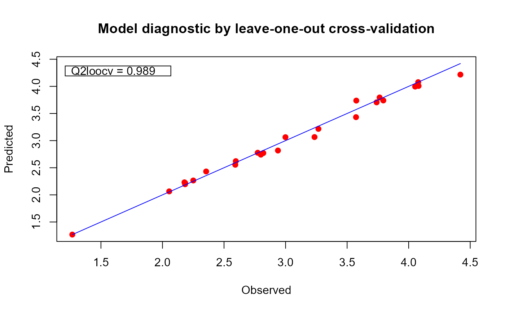
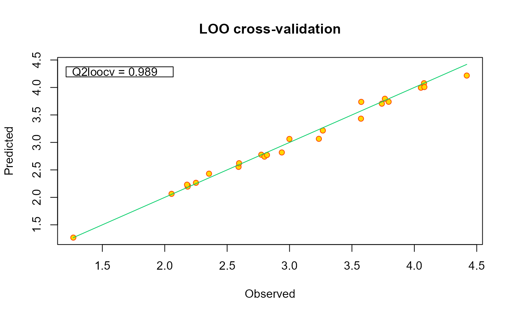

This method provides a diagnostic plot for the validation of regression models. It displays a calibration plot based on the leave-one-out predictions of the output at the points used to train the model.
# S4 method for fgpm
plot(x, y = NULL, ...)A fgpm object.
Not used.
Graphical parameters. These currently include
xlim, ylim to set the limits of the axes.
pch, pt.col, pt.bg, pt.cex to set
the symbol used for the points and the related properties.
line to set the color used for the line.
xlab, ylab, main to set
the labels of the axes and the main title. See
Examples.
Plot the Leave-One-Out (LOO) calibration.
# generating input and output data for training
set.seed(100)
n.tr <- 25
sIn <- expand.grid(x1 = seq(0,1,length = sqrt(n.tr)),
x2 = seq(0, 1, length = sqrt(n.tr)))
fIn <- list(f1 = matrix(runif(n.tr*10), ncol = 10),
f2 = matrix(runif(n.tr*22), ncol = 22))
sOut <- fgp_BB3(sIn, fIn, n.tr)
# building the model
m1 <- fgpm(sIn = sIn, fIn = fIn, sOut = sOut)
#> ** Presampling...
#> ** Optimising hyperparameters...
#> final value 2.841058
#> converged
#> The function value is the negated log-likelihood
#> ** Hyperparameters done!
# plotting the model
plot(m1)

# change some graphical parameters if wanted
plot(m1, line = "SpringGreen3" ,
pch = 21, pt.col = "orangered", pt.bg = "gold",
main = "LOO cross-validation")
